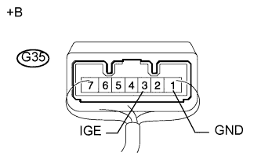

СИСТЕМА БЛОКИРОВКИ РУЛЕВОГО УПРАВЛЕНИЯ > Не удается блокировать рулевое колесо |
| 1.СНИМИТЕ ПОКАЗАНИЯ ПОРТАТИВНОГО ДИАГНОСТИЧЕСКОГО ПРИБОРА (LOCK REQUEST RECEIVE) |
В режиме Data List проверьте работу блокировки рулевого управления.
| Информация на дисплее прибора | Измеряемая величина / диапазон измерения | Нормальное состояние | Замечание по диагностике |
| Lock Request Receive | Индикация приема команды блокировки системой блокировки рулевого управления / NG или OK | NG: Команда блокировки не получена ОК: Команда блокировки получена | - |
|
| ||||
| OK | |
| 2.ПРОВЕРЬТЕ ЭБУ БЛОКИРОВКИ РУЛЕВОГО УПРАВЛЕНИЯ |
Установите рычаг переключения передач в положение P.*
|  |
Измерьте сопротивление и напряжение в соответствии со значениями, приведенными в таблице.
| Контакты для подключения диагностического прибора | Состояние | Заданные условия |
| G35-1 (GND) - масса | Всегда | Менее 1 Ом |
| Контакты для подключения диагностического прибора | Состояние | Заданные условия |
| G35-3 (IGE) - G35-1 (GND) | Электродвигатель блокировки рулевого управления приводится в действие сразу после перевода выключателя зажигания из выключенного состояния во включенное (IG) | Менее 1 В |
| G35-3 (IGE) - G35-1 (GND) | Электродвигатель блокировки рулевого управления не работает | 11-14 В |
| *a | Устройство с подсоединенным жгутом проводов (ЭБУ блокировки рулевого управления) |
|
| ||||
| OK | |
| 3.ПРОВЕРЬТЕ ЖГУТ ПРОВОДОВ И РАЗЪЕМ (ЭБУ БЛОКИРОВКИ РУЛЕВОГО УПРАВЛЕНИЯ – ЭБУ РАСПРЕДЕЛЕНИЯ ПИТАНИЯ) |
Отсоедините разъем G51 ЭБУ распределения питания.
Отсоедините разъем G35 ЭБУ блокировки рулевого управления.
Измерьте сопротивление в соответствии со значениями, приведенными в таблице ниже.
| Контакты для подключения диагностического прибора | Состояние | Заданные условия |
| G35-3 (IGE) - G51-8 (SLR+) | Всегда | Менее 1 Ом |
| G35-3 (IGE) или G51-8 (SLR+) - масса | Всегда | 10 кОм или более |
| Результат | Следующий шаг | |
| NG | А | |
| OK | для моделей с наклонной телескопической рулевой колонкой с ручным приводом | B |
| Для моделей с наклонной телескопической рулевой колонкой с электроприводом | C | |
|
| ||||
|
| ||||
| А | ||
| ||
| 4.СНИМИТЕ ПОКАЗАНИЯ ПОРТАТИВНОГО ДИАГНОСТИЧЕСКОГО ПРИБОРА (FL, FR DOOR COURTESY) |
Используя режим Data List, убедитесь, что выключатель освещения проема двери водителя работоспособен.
| Информация на дисплее прибора | Измеряемая величина / диапазон измерения | Нормальное состояние | Замечание по диагностике |
| FL Door Courtesy | Выключатель освещения проема левой передней двери / ON (ВКЛ) или OFF (ВЫКЛ) | ON (ВКЛ): выключатель освещения проема левой передней двери включен OFF (ВЫКЛ): выключатель освещения проема левой передней двери выключен | - |
| FR Door Courtesy | Выключатель освещения проема правой передней двери / ON (ВКЛ) или OFF (ВЫКЛ) | ON (ВКЛ): выключатель освещения проема правой передней двери включен OFF (ВЫКЛ): выключатель освещения проема правой передней двери выключен | - |
|
| ||||
| OK | |
| 5.СНИМИТЕ ПОКАЗАНИЯ ПОРТАТИВНОГО ДИАГНОСТИЧЕСКОГО ПРИБОРА (ПРОВЕРКА КОДА S) |
Используя режим Data List, убедитесь, что сертификация кода S осуществляется надлежащим образом.
| Информация на дисплее прибора | Измеряемая величина / диапазон измерения | Нормальное состояние | Замечание по диагностике |
| S Code Check | Результат сертификации кода S / NG или OK | ОК: нормальный результат сертификации кода S NG: ненормальный результат сертификации кода S | - |
|
| ||||
| OK | |
| 6.СНИМИТЕ ПОКАЗАНИЯ ПОРТАТИВНОГО ДИАГНОСТИЧЕСКОГО ПРИБОРА (ПРОВЕРКА КОДА L) |
Используя режим Data List, убедитесь, что сертификация кода L осуществляется надлежащим образом.
| Информация на дисплее прибора | Измеряемая величина / диапазон измерения | Нормальное состояние | Замечание по диагностике |
| L Code Check | Результат сертификации кода L / NG или OK | ОК: нормальный результат сертификации кода L NG: ненормальный результат сертификации кода L | - |
|
| ||||
| OK | |
| 7.ЗАМЕНИТЕ ПРИВОД БЛОКИРОВКИ РУЛЕВОГО УПРАВЛЕНИЯ В СБОРЕ (ЭБУ БЛОКИРОВКИ РУЛЕВОГО УПРАВЛЕНИЯ) |
Замените привод блокировки рулевого управления в сборе (ЭБУ блокировки рулевого управления) (Нажмите здесь для моделей с наклонной телескопической рулевой колонкой с ручным приводом и Нажмите здесь для моделей наклонной телескопической рулевой колонкой с электроприводом).
| ДАЛЕЕ | |
| 8.ПРОВЕРЬТЕ СНЯТИЕ БЛОКИРОВКИ РУЛЕВОГО УПРАВЛЕНИЯ |
Включите зажигание (IG).
Поверните рулевое колесо, чтобы проверить состояние замка рулевой колонки.
|
| ||||
| OK | ||
| ||
| 9.ЗАМЕНИТЕ БЛОК ИДЕНТИФИКАЦИОННОГО КОДА |
Замените блок идентификационного кода.
| ДАЛЕЕ | |
| 10.СНИМИТЕ ПОКАЗАНИЯ ПОРТАТИВНОГО ДИАГНОСТИЧЕСКОГО ПРИБОРА (ПРОВЕРКА КОДА S) |
Используя режим Data List, убедитесь, что сертификация кода S осуществляется надлежащим образом.
| Информация на дисплее прибора | Измеряемая величина / диапазон измерения | Нормальное состояние | Замечание по диагностике |
| S Code Check | Результат сертификации кода S / NG или OK | ОК: нормальный результат сертификации кода S NG: ненормальный результат сертификации кода S | - |
|
| ||||
| OK | ||
| ||
| 11.ЗАМЕНИТЕ БЛОК ИДЕНТИФИКАЦИОННОГО КОДА |
Замените блок идентификационного кода.
| ДАЛЕЕ | |
| 12.СНИМИТЕ ПОКАЗАНИЯ ПОРТАТИВНОГО ДИАГНОСТИЧЕСКОГО ПРИБОРА (ПРОВЕРКА КОДА L) |
Используя режим Data List, убедитесь, что сертификация кода L осуществляется надлежащим образом.
| Информация на дисплее прибора | Измеряемая величина / диапазон измерения | Нормальное состояние | Замечание по диагностике |
| L Code Check | Результат сертификации кода L / NG или OK | ОК: нормальный результат сертификации кода L NG: ненормальный результат сертификации кода L | - |
| Результат | Следующий шаг | |
| На экране портативного диагностического прибора отображается OK. | А | |
| На экране портативного диагностического прибора отображается NG. | для моделей с наклонной телескопической рулевой колонкой с ручным приводом | B |
| для моделей с наклонной телескопической рулевой колонкой с электроприводом | C | |
|
| ||||
|
| ||||
| А | ||
| ||